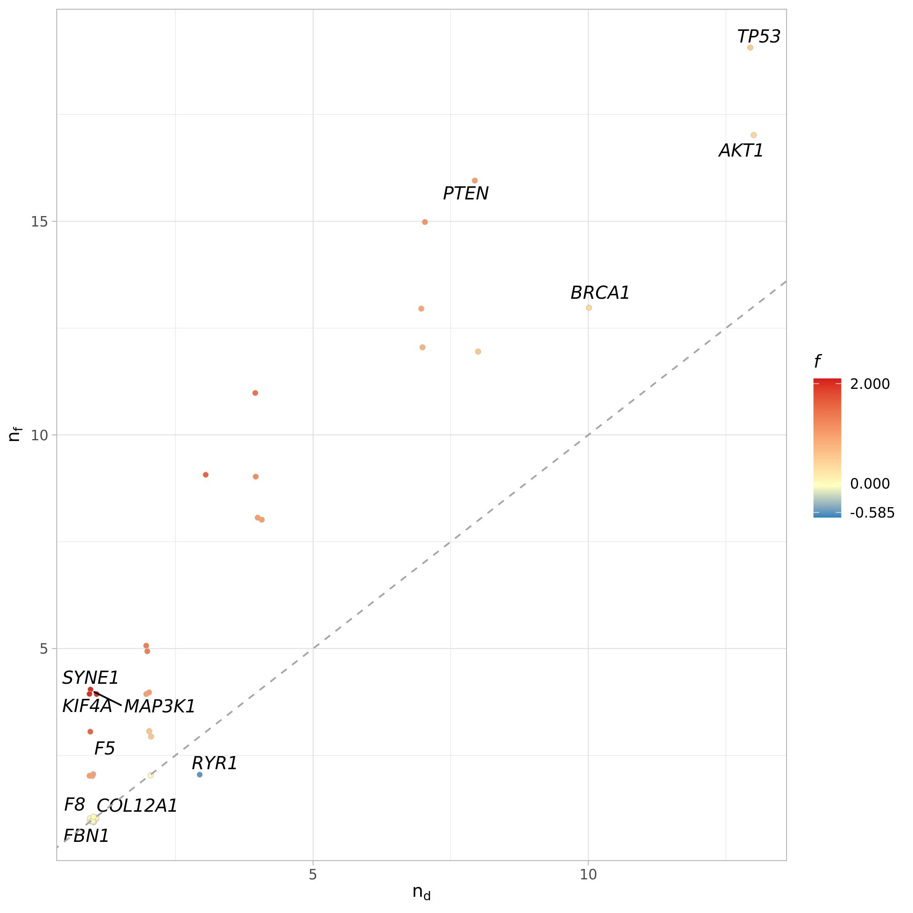

Ulisse workflow 1: Pathway Cross-Talk analysis of bulk data
2024-03-29
Ulisse_bulk.RmdIn this vignette we will show the usage of Ulisse on gene-sets or pathway data. As an example, we will apply cross-talk analysis on mutational bulk data of breast cancer obtained from TCGA. The very same pipeline can be used to analyse gene of interest of cell clusters in single cell data. In this case, the only difference is that this pipeline can be applied to only a cluster at time.
Downloading and preparing the data
library(Ulisse)
library(TCGAbiolinks)
library(STRINGdb)
library(igraph)
library(reshape2)
library(org.Hs.eg.db)Ulisse needs mainly two inputs: a gene list, that can be or not ranked, and a biological network.
Breast cancer mutational data obtained from TCGA will be used to obtain the ranked gene list. The biological network will be obtained from STRING database.
Biological network
In the code below, we obtain STRING data from STRINGdb (Szklarczyk et al. 2021) and build the network from all the genes present in the database. The gene names are formatted with STRING identifiers, so we need to convert it to gene symbol.
string_db <- STRINGdb$new( version="11.0",
species=9606,
score_threshold=700,
input_directory="." )
string_proteins <- string_db$get_proteins()
PPI <- unique(string_db$get_interactions(string_proteins$protein_external_id))
PPI.g <- graph_from_edgelist(as.matrix(PPI[,1:2]), directed = F)
V(PPI.g)$name <- string_proteins$preferred_name[match(V(PPI.g)$name, string_proteins$protein_external_id)]
PPI.g#> IGRAPH a991c72 UN-- 17185 420534 --
#> + attr: name (v/c)
#> + edges from a991c72 (vertex names):
#> [1] ARF5--SPTBN2 ARF5--KIF13B ARF5--AP1B1 ARF5--KIF21A
#> [5] ARF5--TMED7 ARF5--ARFGAP1 ARF5--ANK2 ARF5--KLC1
#> [9] ARF5--COPZ2 ARF5--KIF15 ARF5--DCTN5 ARF5--KIF2B
#> [13] ARF5--KIF16B ARF5--KIF25 ARF5--KDELR2 ARF5--RAB1B
#> [17] ARF5--TMED10 ARF5--KIF3B ARF5--RACGAP1 ARF5--SPTBN4
#> [21] ARF5--GBF1 ARF5--DYNC1I2 ARF5--INS ARF5--CYTH3
#> [25] ARF5--CAPZB ARF5--RAB11FIP3 ARF5--ACAP2 ARF5--KIF3C
#> [29] ARF5--DYNC1LI1 ARF5--KIFAP3 ARF5--COPA ARF5--YKT6
#> + ... omitted several edgesRanked gene list
Then, we will download the data from TGCA by using TCGAbiolinks package Mounir et al. (2019). Here, we want to prioritize the genes considering the frequency of mutations observed among the samples. So, we handle the data to obtain a gene by sample matrix, with the number of mutation observed for each gene. By making the row mean we will obtain the frequency of mutation for each gene in the samples, and we will use this value as a rank, cosnidering the top 200 genes.
query <- GDCquery(project = "TCGA-BRCA",
data.category = "Simple Nucleotide Variation",
data.type = "Masked Somatic Mutation")
#)
GDCdownload(query = query) #have to be done only the first time
data <- TCGAbiolinks::GDCprepare(query, summarizedExperiment = F, save = T)
data <- data[!data$Entrez_Gene_Id == 0,]
data <- data.frame(table(data$SYMBOL, data$Tumor_Sample_Barcode), stringsAsFactors = F)
data <- data.frame(reshape2::acast(data, Var1 ~ Var2), stringsAsFactors = F)
data$mean <- rowMeans(data)
data <- data[order(data$mean, decreasing = T),]
gene_weights <- data.frame(gene = rownames(data),
weights = data$mean,
stringsAsFactors = F)
target_gene_weights <- gene_weights[1:200,]Pathway Data
Now that we have the two needed input, we can proceed in the pipeline. The subsequent step will be:
group genes into a (ranked) gene-sets (or pathways) to obtain a gene-set list
use the gene-set list and the adjacency matrix of the biological network to calculate cross-talk.
As an example we will use MSigDB Hallmark pathways (Liberzon et al. 2015) to obtain the gene-set
list by using preparing_msigdb_list(). This function
downloads a defines gene-set database and uses it to group the gene in
the gene list. The function will return a list composed by a named
vector for each pathway. The vectors are composed by the ranks named
after the genes in the gene-set. It returns only the pathways that are
composed by at least min_size and maximum
max_size genes.
ptw <- preparing_msigdb_list(species = "Homo sapiens",
category = "H",
type = "gene_symbol", min_size = 1, max_size = 500,
gene = target_gene_weights$gene,
weights = target_gene_weights$weights)
ptw[1:3]#> $HALLMARK_ALLOGRAFT_REJECTION
#> AKT1 BRCA1 FLNA
#> 0.02938197 0.02532928 0.02938197
#>
#> $HALLMARK_ANDROGEN_RESPONSE
#> AKT1
#> 0.02938197
#>
#> $HALLMARK_APICAL_JUNCTION
#> CDH1 FBN1 MYH9 NF1 PTEN
#> 0.13880446 0.02938197 0.03444782 0.04457953 0.05876393Ulisse contains also a function, preparing_gs_list() to
build gene-set list from custom resources. To exemplify the usage of
this function, here we download Hallmark db from MSigDB by using msigdbr
package (Dolgalev 2021) to then build the
very same gene-set list.
msig_out <- msigdbr::msigdbr(species = "Homo sapiens", category = "H")
ptw <- preparing_gs_list(gs_names = msig_out$gs_name,
gs_genes = msig_out$gene_symbol,
weights = setNames(target_gene_weights$weights, target_gene_weights$gene),
min_size = 1, max_size = 500)Cross-talk
Now we have all the needed input for calculating cross-talk. The
biological network will be provided to gs_cross_talk()
function as an adjacency matrix. Cross-talk calculation can be
parallelized by increasing the mc_cores_pct and
mc_cores_perm values: the first parallelize the calculation
of the cross-talk on the gene-sets, the second all the permutations used
for p-value calculation, thus multiplying mc_cores_pct in
some part of the function. The number of permutations k
corresponds to the number of permutations needed that, together with the
original matrix, are used for the calculation of p-value and FDR. Here
we set the number to 49, which means that the p-value and FDR are
calculated on 49 permuted matrices + the original one, so 50 matrix in
total (and thus the minimal p-value will be 1/50 = 0.02). Other inputs
parameter are:
sharedwhich should be set toFALSEin gene-set cross-talk to avoid considering shared genes. Pathways are defined to group genes that occur to a particular molecular function. However, they are not mutually exclusive, as a gene may be involved in multiple functions. Considering shared genes will lead to consider in cross-talk calculations even links internal to the pathway. Thus, when calculating cross-talk on gene-sets or pathways this parameter should be set toFALSE;hash: logical, used to speed-up calculation when lots of gene-sets are used. For pathway cross-talk we suggest to set it toTRUE;ct_info: logical, if detailS of gene-gene interaction in the gene-set should be returned. This might be highly important in cell-cell cross-talk. Here we set it toFALSE.
adj.m <- as_adjacency_matrix(PPI.g, sparse = F)
pct <- gs_cross_talk(gs_list = ptw,
gene_network_adj = adj.m,
k = 49, shared = F,
hash = T,
ct_info = F,
mc_cores_perm = 1,
mc_cores_ct = 1)
pct[1:10,]| gs1 | gs2 | ct_score | ngenes_gs1 | ngenes_gs2 | nlink | p_value_link | FDR_link | p_adj_BH | weight_gs1 | weight_gs2 | genes_gs1 | genes_gs2 |
|---|---|---|---|---|---|---|---|---|---|---|---|---|
| HALLMARK_ALLOGRAFT_REJECTION | HALLMARK_ANDROGEN_RESPONSE | 0.0016075 | 2 | 1 | 2 | 0.02 | 0.0688075 | 0.0283761 | 0.0547112 | 0.0293820 | BRCA1;FLNA | AKT1 |
| HALLMARK_ALLOGRAFT_REJECTION | HALLMARK_APICAL_JUNCTION | 0.0107445 | 3 | 4 | 6 | 0.02 | 0.0622889 | 0.0283761 | 0.0840932 | 0.2765957 | AKT1;FLNA;BRCA1 | CDH1;MYH9;NF1;PTEN |
| HALLMARK_ALLOGRAFT_REJECTION | HALLMARK_APICAL_SURFACE | 0.0045844 | 1 | 2 | 2 | 0.02 | 0.0688075 | 0.0283761 | 0.0293820 | 0.1560284 | AKT1 | BRCA1;GATA3 |
| HALLMARK_ALLOGRAFT_REJECTION | HALLMARK_APOPTOSIS | 0.0015182 | 1 | 2 | 2 | 0.02 | 0.0688075 | 0.0283761 | 0.0293820 | 0.0516717 | AKT1 | BRCA1;ERBB2 |
| HALLMARK_ALLOGRAFT_REJECTION | HALLMARK_COMPLEMENT | 0.0150929 | 1 | 2 | 2 | 0.02 | 0.0688075 | 0.0283761 | 0.0293820 | 0.5136778 | AKT1 | GATA3;PIK3CA |
| HALLMARK_ALLOGRAFT_REJECTION | HALLMARK_DNA_REPAIR | 0.0192903 | 2 | 1 | 2 | 0.02 | 0.0688075 | 0.0283761 | 0.0547112 | 0.3525836 | AKT1;BRCA1 | TP53 |
| HALLMARK_ALLOGRAFT_REJECTION | HALLMARK_E2F_TARGETS | 0.0132174 | 2 | 4 | 4 | 0.02 | 0.0655673 | 0.0283761 | 0.0587639 | 0.4498480 | AKT1;FLNA | BRCA1;BRCA2;PRKDC;TP53 |
| HALLMARK_ALLOGRAFT_REJECTION | HALLMARK_EPITHELIAL_MESENCHYMAL_TRANSITION | 0.0016671 | 1 | 2 | 2 | 0.02 | 0.0688075 | 0.0283761 | 0.0293820 | 0.0567376 | AKT1 | FLNA;LAMA1 |
| HALLMARK_ALLOGRAFT_REJECTION | HALLMARK_ESTROGEN_RESPONSE_LATE | 0.0040783 | 1 | 1 | 1 | 0.02 | 0.1088180 | 0.0283761 | 0.0293820 | 0.1388045 | AKT1 | CDH1 |
| HALLMARK_ALLOGRAFT_REJECTION | HALLMARK_G2M_CHECKPOINT | 0.0031134 | 2 | 3 | 4 | 0.02 | 0.0655673 | 0.0283761 | 0.0547112 | 0.0911854 | BRCA1;FLNA | ATRX;BRCA2;KIF4A |
Cross-talk visualization
Cross-talk results can be filtered to maintain only the significant
ones. The results can be visualized as a network
(plot_network_CT()) or as an heatmap
(ct_heatmap()) by using Ulisse package functions.
Considering the network, the filtering argument is used to
control which CT have to be visualized in the network. If set to
TRUE, then p_val, FDR and
ct_val are used to identify the significant CT and plot
these with a solid line, whereas all the others will be plotted with a
dashed line. Otherwise, the whole cross-talk result table will be used.
community can be logical (if the community should be
calculated by using igraph::fastgreedy.community()), or a
community object as calculated with igraph package.
vertex_label can be either logical (if the label of the
vertices should be plotted), or a vector with the label that should be
assigned to each vertex (explained more later in the vignette).
edge_col_by and edge_width parameters control
the value used to color the edges and if their width should be
proportional to that value. edge_adj_col is used to control
the transparency of the edges: as in pathway cross-talk there can be
lots of links it can e useful to control the transparency.
plot_network_CT() function returns the igraph cross-talk
network with the communities under “comm_id” vertex attribute (if
calculated). plot_network_CT() function uses
ggraph package functions (Pedersen
2022), which are ggplot2-based (Wickham
2016). If file_out is set to NULL the
function returns also the ggplot2 network object.
pct_f <- pct[which(pct$p_value_link <=0.05),]
pct_net <- plot_network_CT(ct = pct_f,
filtering = F,
community = T,
vertex_label = FALSE,
edge_col_by = "ct_score", edge_width = T, edge_adj_col = 0.7,
file_out =NULL, width = 200, height = 200, res = 300, units = "mm")
pct_net#> IGRAPH cb0e5ae UN-- 26 149 --
#> + attr: name (v/c), comm_id (v/c), ct_score (e/n), ngenes_gs1 (e/n),
#> | ngenes_gs2 (e/n), nlink (e/n), p_value_link (e/n), FDR_link (e/n),
#> | p_adj_BH (e/n), weight_gs1 (e/n), weight_gs2 (e/n), genes_gs1 (e/c),
#> | genes_gs2 (e/c)
#> + edges from cb0e5ae (vertex names):
#> [1] HALLMARK_ALLOGRAFT_REJECTION--HALLMARK_ANDROGEN_RESPONSE
#> [2] HALLMARK_ALLOGRAFT_REJECTION--HALLMARK_APICAL_JUNCTION
#> [3] HALLMARK_ALLOGRAFT_REJECTION--HALLMARK_APICAL_SURFACE
#> [4] HALLMARK_ALLOGRAFT_REJECTION--HALLMARK_APOPTOSIS
#> [5] HALLMARK_ALLOGRAFT_REJECTION--HALLMARK_COMPLEMENT
#> + ... omitted several edgesHere you can see the significant CT as an heatmap. You can choose the
variable to color the heatmap (here: cross-talk score). The color
parameters are used to set the color of the extremes of the color scale,
so if you want to correct for outliers you can choose not to use minimum
and maximum (default) ad provide your own values.
no_ct_color is used to color the cells in the heatmap
corresponding to the pathways pairs that do not shows CT but that are
necessarily present in an heatmap with a 0 score. Having different
colors for minimum and zero help the heatmap readability. Other
parameters can be passed through ... argument. See
complexHeatmap package for more parameters (Gu,
Eils, and Schlesner 2016).
ct_heatmap(ct = pct_f,
color_by = "ct_score",
color = c("lightyellow", "red3"),
no_ct_color = "whitesmoke",
rect_gp = gpar(col = "white"),
cluster_rows = FALSE,
cluster_columns = FALSE,
row_names_gp = gpar(fontsize = 7), column_names_gp = gpar(fontsize = 7))Gene functional relevance
The significant cross-talk results can be used for gene functional
relevance analysis via gene_functional_relevance()
function. In this analysis the cross-talk data are used to study the
roles of the genes in the cross-talks. It returns:
\(n_f\) the functional diversity, which is the number of different pathways with which a gene is involved in a cross-talk;
\(n_d\) the interactors diversity, or the number of interactors, which are the genes with which a gene interacts in a significant cross-talk;
the functional relevance, which is \(\log_2(\frac{n_f}{n_d})\)
funct_rel <- gene_functional_relevance(ct = pct_f, adj = adj.m, method = "count")
funct_rel[1:10,]| gene | functional_diversity | interactor_diversity | functional_relevance | n_gs_gene | gs_gene | functional_gs | interactors_gene |
|---|---|---|---|---|---|---|---|
| BRCA1 | 13 | 10 | 0.3785116 | 4 | HALLMARK_ALLOGRAFT_REJECTION;HALLMARK_APICAL_SURFACE;HALLMARK_APOPTOSIS;HALLMARK_E2F_TARGETS | HALLMARK_ANDROGEN_RESPONSE;HALLMARK_APICAL_JUNCTION;HALLMARK_DNA_REPAIR;HALLMARK_G2M_CHECKPOINT;HALLMARK_HEDGEHOG_SIGNALING;HALLMARK_KRAS_SIGNALING_DN;HALLMARK_MITOTIC_SPINDLE;HALLMARK_P53_PATHWAY;HALLMARK_PI3K_AKT_MTOR_SIGNALING;HALLMARK_UV_RESPONSE_DN;HALLMARK_WNT_BETA_CATENIN_SIGNALING;HALLMARK_ALLOGRAFT_REJECTION;HALLMARK_APOPTOSIS | AKT1;NF1;PTEN;ERBB2;TP53;BRCA2;ATRX;KIF4A;TEX15;SYNE1 |
| FLNA | 9 | 3 | 1.5849625 | 3 | HALLMARK_ALLOGRAFT_REJECTION;HALLMARK_EPITHELIAL_MESENCHYMAL_TRANSITION;HALLMARK_MITOTIC_SPINDLE | HALLMARK_ANDROGEN_RESPONSE;HALLMARK_APICAL_JUNCTION;HALLMARK_E2F_TARGETS;HALLMARK_G2M_CHECKPOINT;HALLMARK_HEDGEHOG_SIGNALING;HALLMARK_HYPOXIA;HALLMARK_MYOGENESIS;HALLMARK_PI3K_AKT_MTOR_SIGNALING;HALLMARK_ALLOGRAFT_REJECTION | AKT1;BRCA2;MYH9 |
| AKT1 | 17 | 13 | 0.3870231 | 3 | HALLMARK_ALLOGRAFT_REJECTION;HALLMARK_ANDROGEN_RESPONSE;HALLMARK_PI3K_AKT_MTOR_SIGNALING | HALLMARK_APICAL_JUNCTION;HALLMARK_APICAL_SURFACE;HALLMARK_APOPTOSIS;HALLMARK_COMPLEMENT;HALLMARK_DNA_REPAIR;HALLMARK_E2F_TARGETS;HALLMARK_EPITHELIAL_MESENCHYMAL_TRANSITION;HALLMARK_ESTROGEN_RESPONSE_LATE;HALLMARK_HEDGEHOG_SIGNALING;HALLMARK_KRAS_SIGNALING_UP;HALLMARK_MITOTIC_SPINDLE;HALLMARK_MYOGENESIS;HALLMARK_P53_PATHWAY;HALLMARK_TGF_BETA_SIGNALING;HALLMARK_UV_RESPONSE_DN;HALLMARK_WNT_BETA_CATENIN_SIGNALING;HALLMARK_ALLOGRAFT_REJECTION | BRCA1;FLNA;NF1;PTEN;CDH1;GATA3;ERBB2;PIK3CA;TP53;PRKDC;LAMA1;RELN;RB1 |
| NF1 | 11 | 4 | 1.4594316 | 3 | HALLMARK_APICAL_JUNCTION;HALLMARK_HEDGEHOG_SIGNALING;HALLMARK_MITOTIC_SPINDLE | HALLMARK_APICAL_SURFACE;HALLMARK_APOPTOSIS;HALLMARK_DNA_REPAIR;HALLMARK_E2F_TARGETS;HALLMARK_P53_PATHWAY;HALLMARK_PI3K_AKT_MTOR_SIGNALING;HALLMARK_UV_RESPONSE_DN;HALLMARK_WNT_BETA_CATENIN_SIGNALING;HALLMARK_ALLOGRAFT_REJECTION;HALLMARK_ANDROGEN_RESPONSE;HALLMARK_APICAL_JUNCTION | BRCA1;AKT1;PTEN;TP53 |
| PTEN | 16 | 8 | 1.0000000 | 3 | HALLMARK_APICAL_JUNCTION;HALLMARK_PI3K_AKT_MTOR_SIGNALING;HALLMARK_UV_RESPONSE_DN | HALLMARK_APICAL_SURFACE;HALLMARK_APOPTOSIS;HALLMARK_COMPLEMENT;HALLMARK_DNA_REPAIR;HALLMARK_E2F_TARGETS;HALLMARK_ESTROGEN_RESPONSE_LATE;HALLMARK_HEDGEHOG_SIGNALING;HALLMARK_MITOTIC_SPINDLE;HALLMARK_P53_PATHWAY;HALLMARK_TGF_BETA_SIGNALING;HALLMARK_WNT_BETA_CATENIN_SIGNALING;HALLMARK_ALLOGRAFT_REJECTION;HALLMARK_ANDROGEN_RESPONSE;HALLMARK_APICAL_JUNCTION;HALLMARK_G2M_CHECKPOINT;HALLMARK_PI3K_AKT_MTOR_SIGNALING | BRCA1;AKT1;NF1;CDH1;ERBB2;PIK3CA;TP53;BRCA2 |
| CDH1 | 13 | 7 | 0.8930848 | 3 | HALLMARK_APICAL_JUNCTION;HALLMARK_ESTROGEN_RESPONSE_LATE;HALLMARK_TGF_BETA_SIGNALING | HALLMARK_APOPTOSIS;HALLMARK_COMPLEMENT;HALLMARK_DNA_REPAIR;HALLMARK_E2F_TARGETS;HALLMARK_MITOTIC_SPINDLE;HALLMARK_P53_PATHWAY;HALLMARK_PI3K_AKT_MTOR_SIGNALING;HALLMARK_UV_RESPONSE_DN;HALLMARK_WNT_BETA_CATENIN_SIGNALING;HALLMARK_ALLOGRAFT_REJECTION;HALLMARK_ANDROGEN_RESPONSE;HALLMARK_APICAL_JUNCTION;HALLMARK_EPITHELIAL_MESENCHYMAL_TRANSITION | AKT1;PTEN;ERBB2;PIK3CA;TP53;LAMA1;APC |
| FBN1 | 1 | 1 | 0.0000000 | 3 | HALLMARK_APICAL_JUNCTION;HALLMARK_COAGULATION;HALLMARK_EPITHELIAL_MESENCHYMAL_TRANSITION | HALLMARK_COMPLEMENT | F5 |
| GATA3 | 4 | 2 | 1.0000000 | 2 | HALLMARK_APICAL_SURFACE;HALLMARK_COMPLEMENT | HALLMARK_PI3K_AKT_MTOR_SIGNALING;HALLMARK_UV_RESPONSE_DN;HALLMARK_ALLOGRAFT_REJECTION;HALLMARK_ANDROGEN_RESPONSE | AKT1;RUNX1 |
| ERBB2 | 15 | 7 | 1.0995357 | 2 | HALLMARK_APOPTOSIS;HALLMARK_UV_RESPONSE_DN | HALLMARK_COMPLEMENT;HALLMARK_DNA_REPAIR;HALLMARK_E2F_TARGETS;HALLMARK_ESTROGEN_RESPONSE_LATE;HALLMARK_G2M_CHECKPOINT;HALLMARK_MITOTIC_SPINDLE;HALLMARK_P53_PATHWAY;HALLMARK_PI3K_AKT_MTOR_SIGNALING;HALLMARK_TGF_BETA_SIGNALING;HALLMARK_WNT_BETA_CATENIN_SIGNALING;HALLMARK_ALLOGRAFT_REJECTION;HALLMARK_ANDROGEN_RESPONSE;HALLMARK_APICAL_JUNCTION;HALLMARK_APICAL_SURFACE;HALLMARK_APOPTOSIS | BRCA1;AKT1;PTEN;CDH1;PIK3CA;TP53;BRCA2 |
| F8 | 1 | 1 | 0.0000000 | 2 | HALLMARK_COAGULATION;HALLMARK_COMPLEMENT | HALLMARK_EPITHELIAL_MESENCHYMAL_TRANSITION | LRP1 |
Functional relevance analysis results can be visualized through
plot_functional_relevance() function, which takes as input
the result table from gene_functional_relevance(). As
before, if file_name argument is set to NULL
the function will return the ggplot2 object instead of saving it.
plot_names can be used to turn on/off the plotting of gene
names (logical) or to provide a vector with the new labels of the
vertices, instead of their name. It should be a named vector to assure
correspondence between vertices names and new labels It can be used to
change the vertices names or, as demonstrated here, to plot only some
vertices of interest, like the one that have top/least functional and
interactor values and functional relevance scores.
names <- c(funct_rel$gene[order(funct_rel$functional_diversity)][c(1:3, 38:40)],
funct_rel$gene[order(funct_rel$interactor_diversity)][c(1:3, 38:40)],
funct_rel$gene[order(funct_rel$functional_relevance)][c(1:3, 38:40)])
names <- unique(names)
funct_rel_names <- funct_rel$gene
funct_rel_names[!funct_rel_names %in% names] <- ""
plot_functional_relevance(fr = funct_rel,
method = "count",
plot_names = funct_rel_names,
pal = NULL)
We implemented two ways to perform functional relevance analysis:
method = "count" is used to obtain the results shown above,
that list the numbers of pathways and interactors;
method = "relative" is used to calculate normalized
functional relevance by using a general model. In this case, we have to
provide to the function cross-talk results obtained from a general model
built by using all pathway data.
h.ptw <- preparing_msigdb_list(species = "Homo sapiens",
category = "H",
type = "gene_symbol", min_size = 1, max_size = 500,
gene = V(PPI.g)$name,
weights = NULL)
null.pct <- gs_cross_talk(gs_list = h.ptw,
gene_network_adj = adj.m,
shared = F, hash = T,
ct_info = F,
mc_cores_ct = 1, mc_cores_perm = 1, k = 9)With the code above we have run a cross-talk analysis on the whole
Hallmark database. We set weight argument to
NULL to avoid using any weights, as we have none. In this
case the cross-talk is equal to the number of links. Now we can
calculate the normalized functional relevance
funct_rel_norm <- gene_functional_relevance(ct = pct_f,
adj = adj.m,
method = "relative",
ct_null = null.pct)
funct_rel_norm[1:10, ]| gene | relative_functional_diversity | relative_interactor_diversity | relative_functional_relevance | functional_diversity | interactor_diversity | functional_relevance | n_gs_gene | gs_gene | functional_gs | interactors_gene | functional_diversity_null | interactor_diversity_null | functional_gs_null | interactors_gene_null |
|---|---|---|---|---|---|---|---|---|---|---|---|---|---|---|
| AKT1 | 0.3469388 | 0.0400000 | 3.1166092 | 17 | 13 | 0.3870231 | 3 | HALLMARK_ALLOGRAFT_REJECTION;HALLMARK_ANDROGEN_RESPONSE;HALLMARK_PI3K_AKT_MTOR_SIGNALING | HALLMARK_APICAL_JUNCTION;HALLMARK_APICAL_SURFACE;HALLMARK_APOPTOSIS;HALLMARK_COMPLEMENT;HALLMARK_DNA_REPAIR;HALLMARK_E2F_TARGETS;HALLMARK_EPITHELIAL_MESENCHYMAL_TRANSITION;HALLMARK_ESTROGEN_RESPONSE_LATE;HALLMARK_HEDGEHOG_SIGNALING;HALLMARK_KRAS_SIGNALING_UP;HALLMARK_MITOTIC_SPINDLE;HALLMARK_MYOGENESIS;HALLMARK_P53_PATHWAY;HALLMARK_TGF_BETA_SIGNALING;HALLMARK_UV_RESPONSE_DN;HALLMARK_WNT_BETA_CATENIN_SIGNALING;HALLMARK_ALLOGRAFT_REJECTION | BRCA1;FLNA;NF1;PTEN;CDH1;GATA3;ERBB2;PIK3CA;TP53;PRKDC;LAMA1;RELN;RB1 | 49 | 325 | HALLMARK_ANGIOGENESIS;HALLMARK_APICAL_JUNCTION;HALLMARK_APICAL_SURFACE;HALLMARK_APOPTOSIS;HALLMARK_BILE_ACID_METABOLISM;HALLMARK_CHOLESTEROL_HOMEOSTASIS;HALLMARK_COAGULATION;HALLMARK_COMPLEMENT;HALLMARK_DNA_REPAIR;HALLMARK_E2F_TARGETS;HALLMARK_EPITHELIAL_MESENCHYMAL_TRANSITION;HALLMARK_ESTROGEN_RESPONSE_EARLY;HALLMARK_ESTROGEN_RESPONSE_LATE;HALLMARK_FATTY_ACID_METABOLISM;HALLMARK_G2M_CHECKPOINT;HALLMARK_GLYCOLYSIS;HALLMARK_HEDGEHOG_SIGNALING;HALLMARK_HEME_METABOLISM;HALLMARK_HYPOXIA;HALLMARK_IL2_STAT5_SIGNALING;HALLMARK_IL6_JAK_STAT3_SIGNALING;HALLMARK_INFLAMMATORY_RESPONSE;HALLMARK_INTERFERON_ALPHA_RESPONSE;HALLMARK_INTERFERON_GAMMA_RESPONSE;HALLMARK_KRAS_SIGNALING_DN;HALLMARK_KRAS_SIGNALING_UP;HALLMARK_MITOTIC_SPINDLE;HALLMARK_MTORC1_SIGNALING;HALLMARK_MYC_TARGETS_V1;HALLMARK_MYC_TARGETS_V2;HALLMARK_MYOGENESIS;HALLMARK_NOTCH_SIGNALING;HALLMARK_OXIDATIVE_PHOSPHORYLATION;HALLMARK_P53_PATHWAY;HALLMARK_PANCREAS_BETA_CELLS;HALLMARK_PEROXISOME;HALLMARK_PROTEIN_SECRETION;HALLMARK_REACTIVE_OXYGEN_SPECIES_PATHWAY;HALLMARK_SPERMATOGENESIS;HALLMARK_TGF_BETA_SIGNALING;HALLMARK_TNFA_SIGNALING_VIA_NFKB;HALLMARK_UNFOLDED_PROTEIN_RESPONSE;HALLMARK_UV_RESPONSE_DN;HALLMARK_UV_RESPONSE_UP;HALLMARK_WNT_BETA_CATENIN_SIGNALING;HALLMARK_XENOBIOTIC_METABOLISM;HALLMARK_ADIPOGENESIS;HALLMARK_ALLOGRAFT_REJECTION;HALLMARK_ANDROGEN_RESPONSE | CAT;ACLY;ADCY6;ADIPOQ;ANGPT1;CHUK;DECR1;LEP;PDCD4;PFKL;SOD1;STAT5A;YWHAG;LCK;TGFB1;TIMP1;ABI1;BCL3;BRCA1;CCL2;CD28;CD40;CD40LG;CD80;CD86;CDKN2A;FASLG;FLNA;HIF1A;ICAM1;IKBKB;IL10;IL18;IL2;IL2RA;IL2RB;IL2RG;IL6;LYN;MMP9;NOS2;NPM1;STAT1;TLR2;TNF;UBE2D1;GNAI3;CCND1;NKX3-1;FKBP5;NDRG1;VEGFA;SPP1;VAV2;CDH1;GNAI1;GNAI2;PIK3R3;NF1;PTEN;VCAM1;PLCG1;SRC;MMP2;MAPK14;MAPK11;HRAS;INPPL1;IRS1;PIK3CB;SHC1;AKT2;AKT3;YWHAH;IKBKG;ACTB;ITGB4;LAMC2;MSN;NF2;MAPK13;CD274;RAC2;PARVA;TSC1;MDK;GATA3;SLC2A4;HSPB1;GHRL;CREBBP;CD44;JUN;RELA;BCL2L1;CASP3;CASP8;CAV1;CTNNB1;ERBB2;ERBB3;SMAD7;HMOX1;SOD2;PAK1;PDGFRB;PPP2R5B;CYLD;RARA;BCL2L11;CASP9;MCL1;XIAP;HGF;RHOB;BMP2;BAX;BCL2L2;DIABLO;LMNA;CDKN1B;CFLAR;TXNIP;CDKN1A;PEA15;PFKM;AR;RXRA;NEDD4;RXRG;RBP1;ANXA5;FASN;TRIB3;RAC1;GNG12;ITGB3;RAPGEF3;MST1;GNB2;SERPINE1;SIRT2;FN1;FYN;PDGFB;PLEK;HSPA5;GNB4;GNG2;GNGT2;NOTCH4;CBLB;PPP2CB;BRPF3;PIK3CA;SIRT6;GRB2;ZEB1;RAF1;RHOG;PIK3CG;USP8;PIK3R5;TP53;AURKA;MYC;DNMT1;EZH2;PRKDC;CCNE1;LMNB1;CXCL8;FGF2;SNAI2;BDNF;CDH2;IGFBP3;VEGFC;LAMA1;VIM;CXCL12;GJA1;LOX;ADCY9;DLC1;GAB2;DEPTOR;RHOD;NRIP1;NCOR2;FOS;FKBP4;SFN;SLC2A1;KLF4;BCL2;SLC9A3R1;MAPT;JAK1;HSP90AA1;EGF;CCNA2;PML;E2F1;SMAD3;DKC1;CXCR4;IRS2;HK2;PFKP;VLDLR;RRAGD;SHH;TNS1;MKRN1;ABCG2;FOXO3;NR3C1;GATA1;GAPDH;ACKR3;VHL;HK1;PDK1;EFNA1;CTLA4;ITGA6;SELL;SELP;TNFSF11;CSF2;MAP3K8;STAT3;TNFRSF1A;PTPN11;PTPN1;IFNAR1;NFKB1;CSF3;NFKBIA;EDN1;SPHK1;PTGS2;NOS1;TCL1A;PDK2;RELN;IGF2;NGF;GNG11;ADAM17;STRN;CDC42;CTTN;YWHAE;PXN;SOS1;PREX1;ARF6;EZR;RICTOR;CCDC88A;HSP90B1;HSPA4;HSPA9;GSK3B;RPS6;HSP90AB1;EIF4E;PHB2;YWHAQ;PTGES3;IGF1;MAPK12;RB1;GNAO1;MEF2C;HSPB2;TSC2;FOXO4;SOD3;MEF2A;MEF2D;NOTCH1;MYOG;WNT2;ARRB1;CYCS;PDK4;MDM2;SP1;RALGDS;APAF1;TRAF4;ZFP36L1;INS;GCG;FOXO1;FOXA2;ALB;CTBP1;ESR2;MAPK1;LAMTOR5;SIRT1;MTOR;TOPBP1;RHOA;FKBP1A;EGR1;NFE2L2;NR4A1;YWHAZ;KHSRP;EIF4EBP1;ATF4;KIT;PIK3CD;ARRB2;RXRB;SPR;WNT1;SKP2;ESR1;PINK1 |
| APC | 0.0465116 | 0.0136986 | 1.7635598 | 2 | 1 | 1.0000000 | 1 | HALLMARK_MITOTIC_SPINDLE | HALLMARK_APICAL_JUNCTION;HALLMARK_ESTROGEN_RESPONSE_LATE | CDH1 | 43 | 73 | HALLMARK_G2M_CHECKPOINT;HALLMARK_GLYCOLYSIS;HALLMARK_HEME_METABOLISM;HALLMARK_IL2_STAT5_SIGNALING;HALLMARK_KRAS_SIGNALING_UP;HALLMARK_MTORC1_SIGNALING;HALLMARK_MYC_TARGETS_V1;HALLMARK_OXIDATIVE_PHOSPHORYLATION;HALLMARK_P53_PATHWAY;HALLMARK_PEROXISOME;HALLMARK_TGF_BETA_SIGNALING;HALLMARK_UNFOLDED_PROTEIN_RESPONSE;HALLMARK_UV_RESPONSE_UP;HALLMARK_MYOGENESIS;HALLMARK_NOTCH_SIGNALING;HALLMARK_PANCREAS_BETA_CELLS;HALLMARK_PI3K_AKT_MTOR_SIGNALING;HALLMARK_SPERMATOGENESIS;HALLMARK_TNFA_SIGNALING_VIA_NFKB;HALLMARK_UV_RESPONSE_DN;HALLMARK_WNT_BETA_CATENIN_SIGNALING;HALLMARK_XENOBIOTIC_METABOLISM;HALLMARK_ADIPOGENESIS;HALLMARK_ALLOGRAFT_REJECTION;HALLMARK_ANDROGEN_RESPONSE;HALLMARK_APICAL_JUNCTION;HALLMARK_APICAL_SURFACE;HALLMARK_APOPTOSIS;HALLMARK_CHOLESTEROL_HOMEOSTASIS;HALLMARK_COAGULATION;HALLMARK_COMPLEMENT;HALLMARK_DNA_REPAIR;HALLMARK_E2F_TARGETS;HALLMARK_EPITHELIAL_MESENCHYMAL_TRANSITION;HALLMARK_ESTROGEN_RESPONSE_EARLY;HALLMARK_ESTROGEN_RESPONSE_LATE;HALLMARK_FATTY_ACID_METABOLISM;HALLMARK_HEDGEHOG_SIGNALING;HALLMARK_INFLAMMATORY_RESPONSE;HALLMARK_INTERFERON_ALPHA_RESPONSE;HALLMARK_INTERFERON_GAMMA_RESPONSE;HALLMARK_KRAS_SIGNALING_DN;HALLMARK_MITOTIC_SPINDLE | UBC;PSMB10;CCND1;CDH1;CTNNA1;DLG1;JUP;CASP3;CTNNB1;PPP2R5B;LEF1;RAC1;PSMB9;PPP2CB;RBX1;XPO1;CDH2;PSME1;CUL1;TLE3;PSMC4;TLE1;PSMD9;BTRC;FZD5;PSMA3;PSMB8;PSME2;PSMA2;PSMB2;TCF7L1;KMT2D;HNF1A;CDC42;CSNK1D;MAPRE1;PSMB5;PSMC2;PSMD12;PSMD13;PSME3;GSK3B;CACYBP;PSMA4;PSMC6;PSMD14;PSMD1;PSMA1;PSMA6;PSMA7;PSMB3;PSMD3;PSMD7;PSMD8;NOTCH1;WNT2;SKP1;TCF7L2;FZD1;CTBP1;SIAH1;PPP2R1B;TLE4;HDAC1;FZD2;PSMC3;AXIN1;AXIN2;WNT1;TCF7;DVL2;CSNK1E;FRAT1 |
| ATRX | 0.4090909 | 0.2352941 | 0.7979562 | 9 | 4 | 1.1699250 | 2 | HALLMARK_G2M_CHECKPOINT;HALLMARK_UV_RESPONSE_DN | HALLMARK_P53_PATHWAY;HALLMARK_WNT_BETA_CATENIN_SIGNALING;HALLMARK_ALLOGRAFT_REJECTION;HALLMARK_APICAL_SURFACE;HALLMARK_APOPTOSIS;HALLMARK_DNA_REPAIR;HALLMARK_E2F_TARGETS;HALLMARK_G2M_CHECKPOINT;HALLMARK_MITOTIC_SPINDLE | BRCA1;TP53;PRKDC;BRCA2 | 22 | 17 | HALLMARK_GLYCOLYSIS;HALLMARK_MITOTIC_SPINDLE;HALLMARK_MTORC1_SIGNALING;HALLMARK_MYC_TARGETS_V1;HALLMARK_OXIDATIVE_PHOSPHORYLATION;HALLMARK_P53_PATHWAY;HALLMARK_PEROXISOME;HALLMARK_SPERMATOGENESIS;HALLMARK_TGF_BETA_SIGNALING;HALLMARK_WNT_BETA_CATENIN_SIGNALING;HALLMARK_XENOBIOTIC_METABOLISM;HALLMARK_ADIPOGENESIS;HALLMARK_ALLOGRAFT_REJECTION;HALLMARK_ANDROGEN_RESPONSE;HALLMARK_APICAL_SURFACE;HALLMARK_APOPTOSIS;HALLMARK_BILE_ACID_METABOLISM;HALLMARK_DNA_REPAIR;HALLMARK_E2F_TARGETS;HALLMARK_ESTROGEN_RESPONSE_LATE;HALLMARK_FATTY_ACID_METABOLISM;HALLMARK_G2M_CHECKPOINT | IDH1;BRCA1;XRCC5;XRCC6;RAD51;RAD52;TP53;BRCA2;EZH2;SMC3;PRKDC;PNN;XRCC3;ARID4A;WRN;TRIM28;ARID4B |
| BRCA1 | 0.3170732 | 0.0675676 | 2.2304130 | 13 | 10 | 0.3785116 | 4 | HALLMARK_ALLOGRAFT_REJECTION;HALLMARK_APICAL_SURFACE;HALLMARK_APOPTOSIS;HALLMARK_E2F_TARGETS | HALLMARK_ANDROGEN_RESPONSE;HALLMARK_APICAL_JUNCTION;HALLMARK_DNA_REPAIR;HALLMARK_G2M_CHECKPOINT;HALLMARK_HEDGEHOG_SIGNALING;HALLMARK_KRAS_SIGNALING_DN;HALLMARK_MITOTIC_SPINDLE;HALLMARK_P53_PATHWAY;HALLMARK_PI3K_AKT_MTOR_SIGNALING;HALLMARK_UV_RESPONSE_DN;HALLMARK_WNT_BETA_CATENIN_SIGNALING;HALLMARK_ALLOGRAFT_REJECTION;HALLMARK_APOPTOSIS | AKT1;NF1;PTEN;ERBB2;TP53;BRCA2;ATRX;KIF4A;TEX15;SYNE1 | 41 | 148 | HALLMARK_ANDROGEN_RESPONSE;HALLMARK_APICAL_JUNCTION;HALLMARK_BILE_ACID_METABOLISM;HALLMARK_COMPLEMENT;HALLMARK_DNA_REPAIR;HALLMARK_EPITHELIAL_MESENCHYMAL_TRANSITION;HALLMARK_ESTROGEN_RESPONSE_EARLY;HALLMARK_ESTROGEN_RESPONSE_LATE;HALLMARK_FATTY_ACID_METABOLISM;HALLMARK_G2M_CHECKPOINT;HALLMARK_GLYCOLYSIS;HALLMARK_HEDGEHOG_SIGNALING;HALLMARK_HEME_METABOLISM;HALLMARK_HYPOXIA;HALLMARK_IL2_STAT5_SIGNALING;HALLMARK_IL6_JAK_STAT3_SIGNALING;HALLMARK_INFLAMMATORY_RESPONSE;HALLMARK_INTERFERON_GAMMA_RESPONSE;HALLMARK_KRAS_SIGNALING_DN;HALLMARK_KRAS_SIGNALING_UP;HALLMARK_MITOTIC_SPINDLE;HALLMARK_MTORC1_SIGNALING;HALLMARK_MYC_TARGETS_V1;HALLMARK_MYC_TARGETS_V2;HALLMARK_NOTCH_SIGNALING;HALLMARK_OXIDATIVE_PHOSPHORYLATION;HALLMARK_P53_PATHWAY;HALLMARK_PEROXISOME;HALLMARK_PI3K_AKT_MTOR_SIGNALING;HALLMARK_PROTEIN_SECRETION;HALLMARK_REACTIVE_OXYGEN_SPECIES_PATHWAY;HALLMARK_SPERMATOGENESIS;HALLMARK_TGF_BETA_SIGNALING;HALLMARK_TNFA_SIGNALING_VIA_NFKB;HALLMARK_UV_RESPONSE_DN;HALLMARK_UV_RESPONSE_UP;HALLMARK_WNT_BETA_CATENIN_SIGNALING;HALLMARK_XENOBIOTIC_METABOLISM;HALLMARK_ADIPOGENESIS;HALLMARK_ALLOGRAFT_REJECTION;HALLMARK_APOPTOSIS | UBC;GADD45A;EGFR;CDKN2A;UBE2D1;UBE2N;AKT1;CCND1;PIAS1;UBE2I;XRCC5;XRCC6;CDK8;GTF2F1;NF1;PTEN;TUBG1;VCAM1;JUN;CASP3;ERBB2;CDK2;CCNA1;TOP2A;AR;KIF2A;RNF4;RAD51;RFC4;RAD52;ERCC1;ERCC4;POLD4;POLH;RFC5;ELL;ERCC2;ERCC3;GTF2H1;GTF2H3;GTF2H5;NELFB;NELFCD;NELFE;POLR2A;POLR2C;POLR2D;POLR2E;POLR2F;POLR2G;POLR2H;POLR2I;POLR2J;POLR2K;SUPT4H1;SUPT5H;TP53;PCNA;POLD1;POLE4;RFC2;RFC3;RPA2;RPA3;SSRP1;POLD3;CDK1;AURKA;HMMR;MYC;KIF2C;KIF4A;BRCA2;CDK4;RPA1;EZH2;MSH2;CHEK1;PLK1;POLD2;POLE;RAD21;SMC1A;SMC3;UBE2S;CCNE1;HUS1;NBN;STAG1;BARD1;RAD51C;RFC1;LMNB1;PGR;RBBP8;XRCC3;CDC6;BUB1;CCNA2;CDC27;CDC45;EXO1;KIF20B;KIF23;PRC1;TPX2;UBE2C;CCNT1;MNAT1;RAD54L;TFDP1;ATRX;ABL1;WRN;FANCC;EWSR1;PAXIP1;BACH1;TCEA1;FOSL2;POU2F1;MSH5;TEX15;STAG3;CBX8;ANLN;CENPJ;MARK4;TUBGCP5;TUBGCP6;SUN2;UBE2D3;ACACA;HNRNPA2B1;POLE3;HNRNPA1;MDM2;CCNK;RAD9A;CTBP1;CDK7;RAD17;TOPBP1;PARP2;DMC1;CDK9;SYNE1;ESR1 |
| BRCA2 | 0.4444444 | 0.1176471 | 1.9175378 | 12 | 8 | 0.5849625 | 3 | HALLMARK_E2F_TARGETS;HALLMARK_G2M_CHECKPOINT;HALLMARK_MITOTIC_SPINDLE | HALLMARK_KRAS_SIGNALING_DN;HALLMARK_P53_PATHWAY;HALLMARK_PI3K_AKT_MTOR_SIGNALING;HALLMARK_UV_RESPONSE_DN;HALLMARK_WNT_BETA_CATENIN_SIGNALING;HALLMARK_ALLOGRAFT_REJECTION;HALLMARK_APICAL_JUNCTION;HALLMARK_APICAL_SURFACE;HALLMARK_APOPTOSIS;HALLMARK_DNA_REPAIR;HALLMARK_E2F_TARGETS;HALLMARK_EPITHELIAL_MESENCHYMAL_TRANSITION | BRCA1;FLNA;PTEN;ERBB2;TP53;PRKDC;ATRX;TEX15 | 27 | 68 | HALLMARK_EPITHELIAL_MESENCHYMAL_TRANSITION;HALLMARK_ESTROGEN_RESPONSE_EARLY;HALLMARK_ESTROGEN_RESPONSE_LATE;HALLMARK_FATTY_ACID_METABOLISM;HALLMARK_GLYCOLYSIS;HALLMARK_HEME_METABOLISM;HALLMARK_KRAS_SIGNALING_DN;HALLMARK_MTORC1_SIGNALING;HALLMARK_MYC_TARGETS_V1;HALLMARK_MYC_TARGETS_V2;HALLMARK_P53_PATHWAY;HALLMARK_PEROXISOME;HALLMARK_PI3K_AKT_MTOR_SIGNALING;HALLMARK_SPERMATOGENESIS;HALLMARK_UV_RESPONSE_DN;HALLMARK_UV_RESPONSE_UP;HALLMARK_WNT_BETA_CATENIN_SIGNALING;HALLMARK_XENOBIOTIC_METABOLISM;HALLMARK_ADIPOGENESIS;HALLMARK_ALLOGRAFT_REJECTION;HALLMARK_APICAL_JUNCTION;HALLMARK_APICAL_SURFACE;HALLMARK_APOPTOSIS;HALLMARK_COAGULATION;HALLMARK_DNA_REPAIR;HALLMARK_E2F_TARGETS;HALLMARK_G2M_CHECKPOINT | UBC;BRCA1;FLNA;PTEN;ERBB2;CDK2;USP11;RAD51;RFC4;RAD52;ERCC1;POLD4;POLH;RFC5;TP53;PCNA;POLD1;POLE4;RFC2;RFC3;RPA2;RPA3;POLD3;CDK1;AURKA;CDK4;RPA1;MSH2;AURKB;BUB1B;CHEK1;CHEK2;PLK1;POLD2;POLE;PRKDC;HUS1;RAD1;NBN;RAD50;BARD1;RAD51AP1;RAD51C;RFC1;PDS5B;MLH1;PMS2;PSMC3IP;USP1;PGR;RBBP8;XRCC3;EXO1;RAD54L;ATRX;WRN;FANCC;KAT2B;MSH5;TEX15;POLE3;PSMD3;RAD9A;RAD17;TOPBP1;PARP2;DMC1;ESR1 |
| CACNA1A | 0.0714286 | 0.0526316 | 0.4405726 | 1 | 1 | 0.0000000 | 1 | HALLMARK_UV_RESPONSE_DN | HALLMARK_KRAS_SIGNALING_DN | RYR1 | 14 | 19 | HALLMARK_ALLOGRAFT_REJECTION;HALLMARK_CHOLESTEROL_HOMEOSTASIS;HALLMARK_COAGULATION;HALLMARK_COMPLEMENT;HALLMARK_ESTROGEN_RESPONSE_EARLY;HALLMARK_ESTROGEN_RESPONSE_LATE;HALLMARK_KRAS_SIGNALING_DN;HALLMARK_MITOTIC_SPINDLE;HALLMARK_MYOGENESIS;HALLMARK_PANCREAS_BETA_CELLS;HALLMARK_PEROXISOME;HALLMARK_PI3K_AKT_MTOR_SIGNALING;HALLMARK_PROTEIN_SECRETION;HALLMARK_TGF_BETA_SIGNALING | PRKCB;PRKCG;ATXN2;RAC1;GNB2;CALM1;CALM3;KCNK5;CACNA2D2;RYR1;CACNG1;ARHGAP5;GNAO1;CAV3;INS;CACNA1B;GNGT1;CAV2;RHOA |
| CACNA1F | 0.0909091 | 0.0833333 | 0.1255309 | 1 | 1 | 0.0000000 | 1 | HALLMARK_KRAS_SIGNALING_DN | HALLMARK_MYOGENESIS | RYR1 | 11 | 12 | HALLMARK_KRAS_SIGNALING_UP;HALLMARK_MYOGENESIS;HALLMARK_PEROXISOME;HALLMARK_SPERMATOGENESIS;HALLMARK_TGF_BETA_SIGNALING;HALLMARK_UV_RESPONSE_DN;HALLMARK_UV_RESPONSE_UP;HALLMARK_APICAL_JUNCTION;HALLMARK_COMPLEMENT;HALLMARK_ESTROGEN_RESPONSE_LATE;HALLMARK_GLYCOLYSIS | GNAI2;CALM1;CALM3;CACNA2D2;CACNA1H;RYR1;CACNG1;PRKG2;CACNA1B;HSPA2;FKBP1A;KCNMA1 |
| CDH1 | 0.2765957 | 0.0510949 | 2.4365280 | 13 | 7 | 0.8930848 | 3 | HALLMARK_APICAL_JUNCTION;HALLMARK_ESTROGEN_RESPONSE_LATE;HALLMARK_TGF_BETA_SIGNALING | HALLMARK_APOPTOSIS;HALLMARK_COMPLEMENT;HALLMARK_DNA_REPAIR;HALLMARK_E2F_TARGETS;HALLMARK_MITOTIC_SPINDLE;HALLMARK_P53_PATHWAY;HALLMARK_PI3K_AKT_MTOR_SIGNALING;HALLMARK_UV_RESPONSE_DN;HALLMARK_WNT_BETA_CATENIN_SIGNALING;HALLMARK_ALLOGRAFT_REJECTION;HALLMARK_ANDROGEN_RESPONSE;HALLMARK_APICAL_JUNCTION;HALLMARK_EPITHELIAL_MESENCHYMAL_TRANSITION | AKT1;PTEN;ERBB2;PIK3CA;TP53;LAMA1;APC | 47 | 137 | HALLMARK_APICAL_SURFACE;HALLMARK_APOPTOSIS;HALLMARK_BILE_ACID_METABOLISM;HALLMARK_CHOLESTEROL_HOMEOSTASIS;HALLMARK_COAGULATION;HALLMARK_COMPLEMENT;HALLMARK_DNA_REPAIR;HALLMARK_E2F_TARGETS;HALLMARK_EPITHELIAL_MESENCHYMAL_TRANSITION;HALLMARK_ESTROGEN_RESPONSE_EARLY;HALLMARK_ESTROGEN_RESPONSE_LATE;HALLMARK_FATTY_ACID_METABOLISM;HALLMARK_G2M_CHECKPOINT;HALLMARK_GLYCOLYSIS;HALLMARK_HEDGEHOG_SIGNALING;HALLMARK_HEME_METABOLISM;HALLMARK_HYPOXIA;HALLMARK_IL2_STAT5_SIGNALING;HALLMARK_IL6_JAK_STAT3_SIGNALING;HALLMARK_INFLAMMATORY_RESPONSE;HALLMARK_INTERFERON_GAMMA_RESPONSE;HALLMARK_KRAS_SIGNALING_DN;HALLMARK_KRAS_SIGNALING_UP;HALLMARK_MITOTIC_SPINDLE;HALLMARK_MTORC1_SIGNALING;HALLMARK_MYC_TARGETS_V1;HALLMARK_MYC_TARGETS_V2;HALLMARK_MYOGENESIS;HALLMARK_NOTCH_SIGNALING;HALLMARK_P53_PATHWAY;HALLMARK_PANCREAS_BETA_CELLS;HALLMARK_PEROXISOME;HALLMARK_PI3K_AKT_MTOR_SIGNALING;HALLMARK_PROTEIN_SECRETION;HALLMARK_SPERMATOGENESIS;HALLMARK_TGF_BETA_SIGNALING;HALLMARK_TNFA_SIGNALING_VIA_NFKB;HALLMARK_UNFOLDED_PROTEIN_RESPONSE;HALLMARK_UV_RESPONSE_DN;HALLMARK_UV_RESPONSE_UP;HALLMARK_WNT_BETA_CATENIN_SIGNALING;HALLMARK_XENOBIOTIC_METABOLISM;HALLMARK_ADIPOGENESIS;HALLMARK_ALLOGRAFT_REJECTION;HALLMARK_ANDROGEN_RESPONSE;HALLMARK_ANGIOGENESIS;HALLMARK_APICAL_JUNCTION | PDCD4;TGFB1;EGFR;CDKN2A;IL6;MMP9;AKT1;ACTN1;CCND1;IQGAP2;KRT19;KRT8;VEGFA;FGFR1;S100A4;CTNNA1;CTNND1;DLG1;JUP;PTEN;SRC;MMP2;ACTA1;HRAS;PKD1;EXOC4;STX4;VCL;ITGB4;LAMC2;TJP1;CDH11;CDH15;CDH3;CDH4;CDH6;CDH8;LIMA1;VASP;ZYX;ADAM9;ADAM15;CLDN4;CLDN7;ADAM10;FLOT2;CD44;JUN;CASP3;CAV1;CTNNB1;ERBB2;TIMP2;HGF;PSEN1;KRT18;AR;ANXA5;RAC1;PROC;MMP3;MMP7;F2RL2;HNF4A;SERPINE1;FN1;PLG;FYN;MMP14;PIK3CA;ZEB1;CDH13;CA2;TP53;MYC;DNMT1;EZH2;CXCL8;FGF2;SNAI2;WNT5A;CDH2;LAMA1;FOXC2;VIM;IGF1R;GFRA1;RET;KLF4;PKP3;EGF;SMAD3;NUP98;SOX9;MET;CLDN3;GLI1;ABCG2;GAPDH;PRKCA;VHL;EFNA1;ITGA6;ITGAE;STAT3;PTGS2;ITGB7;GDNF;SLC6A3;SKIL;KLK7;IGF2;WNT7A;CDC42;CTTN;APC;EZR;GSK3B;HDAC2;IGF1;NOTCH1;KIFC3;EPHA2;FOXA2;ALB;CTBP1;SMAD2;MAPK1;RAB5A;MEP1B;SIRT1;RHOA;MTA1;EPCAM;NUMB;NCSTN;ESR1 |
| COL12A1 | 0.0833333 | 0.0500000 | 0.7369656 | 1 | 1 | 0.0000000 | 1 | HALLMARK_EPITHELIAL_MESENCHYMAL_TRANSITION | HALLMARK_MYOGENESIS | COL6A3 | 12 | 20 | HALLMARK_GLYCOLYSIS;HALLMARK_HEME_METABOLISM;HALLMARK_HYPOXIA;HALLMARK_IL2_STAT5_SIGNALING;HALLMARK_KRAS_SIGNALING_DN;HALLMARK_MTORC1_SIGNALING;HALLMARK_MYOGENESIS;HALLMARK_UV_RESPONSE_DN;HALLMARK_UV_RESPONSE_UP;HALLMARK_ADIPOGENESIS;HALLMARK_APICAL_JUNCTION;HALLMARK_COMPLEMENT | COL15A1;COL3A1;COL5A2;COL17A1;COL9A1;MMP12;COL4A2;COL1A1;COL1A2;SERPINH1;COL11A1;COL6A2;COL6A3;COL5A1;PLOD1;PLOD2;P4HA1;P4HA2;COL6A1;COL2A1 |
| COL6A3 | 0.0454545 | 0.0263158 | 0.7884959 | 1 | 1 | 0.0000000 | 1 | HALLMARK_MYOGENESIS | HALLMARK_EPITHELIAL_MESENCHYMAL_TRANSITION | COL12A1 | 22 | 38 | HALLMARK_GLYCOLYSIS;HALLMARK_HEME_METABOLISM;HALLMARK_HYPOXIA;HALLMARK_IL2_STAT5_SIGNALING;HALLMARK_IL6_JAK_STAT3_SIGNALING;HALLMARK_INFLAMMATORY_RESPONSE;HALLMARK_INTERFERON_ALPHA_RESPONSE;HALLMARK_INTERFERON_GAMMA_RESPONSE;HALLMARK_KRAS_SIGNALING_DN;HALLMARK_KRAS_SIGNALING_UP;HALLMARK_MTORC1_SIGNALING;HALLMARK_P53_PATHWAY;HALLMARK_UV_RESPONSE_DN;HALLMARK_UV_RESPONSE_UP;HALLMARK_ADIPOGENESIS;HALLMARK_ANDROGEN_RESPONSE;HALLMARK_ANGIOGENESIS;HALLMARK_APICAL_JUNCTION;HALLMARK_APOPTOSIS;HALLMARK_COAGULATION;HALLMARK_COMPLEMENT;HALLMARK_EPITHELIAL_MESENCHYMAL_TRANSITION | COL4A1;COL15A1;ITGA7;ITGAV;LUM;COL3A1;COL5A2;POSTN;COL17A1;COL9A1;ITGB4;ITGA2;COL16A1;CASP8;DCN;ITGB3;PDGFB;COL7A1;COL1A1;COL1A2;SDC1;ITGA5;SERPINH1;COL11A1;COL12A1;COL5A3;COL8A2;COLGALT1;PLOD3;PPIB;COL5A1;PLOD1;PLOD2;P4HA1;P4HA2;COL6A1;ITGA4;COL2A1 |
As you can see, relative functional relevance returns also the
“count” values, as well as the functional and interactor diversity
calculated on the general model and used for normalization. Now we can
use the same plot_functional_relevance() function to plot
relative functional relevance results.
names <- c(funct_rel_norm$gene[order(funct_rel_norm$functional_diversity)][c(1:3, 38:40)],
funct_rel_norm$gene[order(funct_rel_norm$interactor_diversity)][c(1:3, 38:40)],
funct_rel_norm$gene[order(funct_rel_norm$functional_relevance)][c(1:3, 38:40)])
names <- unique(names)
funct_rel_names <- funct_rel_norm$gene
funct_rel_names[!funct_rel_names %in% names] <- ""
plot_functional_relevance(fr = funct_rel_norm,
method = "relative",
plot_names = funct_rel_names, pal = NULL)As you can see from the plotting function call, the
method argument is used to define which data you want to
plot (“count” or “relative”, as in functional relevance calculation).
This implies that by using the functional relevance results obtained
with method “relative”, that thus returns both relative and count
results, it is possible to plot both results without re-running the
calculation.
Sub-gene-set cross-talk
Gene interacts inside the gene-sets and groups into connected
components (CC). Each connected components correspond to genes with a
similar biological function. It may be important to study the CC of
gene-sets of interest. gene_set_cc() assigns a score to
each CC in the gene-sets. Similarly to gs_cross_talk,
mc_cores_cc control the parallelization of the calculation
of the CC score. The function returns a list of two elements: the first
are the details of the CC present in each pathway and the second a table
with the result of the sub-pathway analysis
pct_CC <- gene_set_cc(gs_list = ptw,
gene_network_adj = adj.m,
mc_cores_cc = 2)
pct_CC$membership[1:3]#> [[1]]
#> AKT1 BRCA1 FLNA
#> 1 1 1
#>
#> [[2]]
#> CDH1 FBN1 MYH9 NF1 PTEN
#> 1 2 3 1 1
#>
#> [[3]]
#> BRCA1 ERBB2
#> 1 1
pct_CC$pathway_cc[1:10,]| pathway | ID | score | n_gene | n_link | gene |
|---|---|---|---|---|---|
| HALLMARK_ALLOGRAFT_REJECTION | 1 | 0.0189125 | 3 | 2 | 2 |
| HALLMARK_APICAL_JUNCTION | 1 | 0.0501520 | 3 | 2 | 2 |
| HALLMARK_APOPTOSIS | 1 | 0.0129179 | 2 | 1 | 1 |
| HALLMARK_COAGULATION | 1 | 0.0192503 | 2 | 1 | 1 |
| HALLMARK_COMPLEMENT | 1 | 0.0238095 | 3 | 2 | 2 |
| HALLMARK_E2F_TARGETS | 1 | 0.1212428 | 6 | 8 | 8 |
| HALLMARK_EPITHELIAL_MESENCHYMAL_TRANSITION | 1 | 0.0157042 | 2 | 1 | 1 |
| HALLMARK_G2M_CHECKPOINT | 1 | 0.0162107 | 2 | 1 | 1 |
| HALLMARK_G2M_CHECKPOINT | 2 | 0.0134245 | 2 | 1 | 1 |
| HALLMARK_KRAS_SIGNALING_DN | 1 | 0.0371496 | 3 | 2 | 2 |
TM-CT
Network can be studied to identify communities, that are groups of
vertices that are more connected between them than to the rest of the
network. It is said that these communities correspond to genes that have
similar biological function. By aligning the biological network to the
target genes we can obtain the gene network, that can be studied to
identify communities. The genes of the different communities can be
grouped in gene-sets, which should represent the part of pathways that
have a similar biological function. We decided to develop
TM_CT() as to be able to study how the gene-sets build on
these gene communities interact between communities. First, we need to
subset the biological network to then identify the gene communities. We
can use find_communites() function to compare different
algorithms
sub.PPI <- induced.subgraph(PPI.g, vids = target_gene_weights$gene[target_gene_weights$gene %in% V(PPI.g)$name])
sub.PPI <- induced.subgraph(sub.PPI, V(sub.PPI)$name[-which(igraph::degree(sub.PPI) ==0)])
comm_det <- find_communities(sub.PPI)
comm_det$info#> algorithm modularity n
#> 1 fastgreedy 0.6529376 12
#> 2 labprop 0.6177907 17
#> 3 walktrap 0.6468313 18
#> 4 eigen 0.6170664 14
#> 5 multilev 0.6687360 11
#> 6 infomap 0.6531292 18Considering the output of find_communities, the best
algorithm to choose is the one with highest modularity and the lowest
number of communities. Here we choose to use multi-level modularity
optimization algorithm.
comm <- comm_det$comm$multilev
comm_m <- membership(comm)
sub.PPI <- set_vertex_attr(sub.PPI, "comm_id", value = as.character(comm_m[match(names(V(sub.PPI)), names(comm_m))]))
pal = pals::alphabet2(max(comm_m))
names(pal) <- 1:max(comm_m)
ggraph(sub.PPI) +
theme_graph() +
geom_edge_link(color = "grey45") +
geom_node_point(aes(color = comm_id), size = 3) +
scale_color_manual(limits = names(pal), values = pal)Now we have all the inputs needed for TM-CT. As before,
mc_cores_ct and mc_cores_tm controls the
parallelization of the calculation of TM-PCT score in pathway pairs and
combinations of communities, respectively. TM_CT() function
returns a list of two object, the first is a pathway list for each
community, the second a table with the results of TM-CT calculation
tm_pct <- TM_CT(gs_list = ptw,
gene_network_adj = adj.m,
membership = comm_m,
mc_cores_ct = 1,
mc_cores_tm = 1)
tm_pct[["comm_pathway_list"]][["1"]][1:3]#> $HALLMARK_ALLOGRAFT_REJECTION
#> BRCA1
#> 0.02532928
#>
#> $HALLMARK_APICAL_JUNCTION
#> MYH9 NF1
#> 0.03444782 0.04457953
#>
#> $HALLMARK_APICAL_SURFACE
#> BRCA1 PKHD1
#> 0.02532928 0.03343465
tm_pct$TM_CT_res[1:10,]| commID_1 | gs1 | commID_2 | gs2 | ct_score | ngenes_pathway1 | ngenes_pathway2 | nlink | weight_pathway1 | weight_pathway2 | gene_pathway1 | gene_pathway2 |
|---|---|---|---|---|---|---|---|---|---|---|---|
| 1 | HALLMARK_ALLOGRAFT_REJECTION | 2 | HALLMARK_APICAL_JUNCTION | 0.0014884 | 1 | 1 | 1 | 0.0253293 | 0.0587639 | BRCA1 | PTEN |
| 1 | HALLMARK_APICAL_SURFACE | 2 | HALLMARK_APICAL_JUNCTION | 0.0014884 | 1 | 1 | 1 | 0.0253293 | 0.0587639 | BRCA1 | PTEN |
| 1 | HALLMARK_APOPTOSIS | 2 | HALLMARK_APICAL_JUNCTION | 0.0014884 | 1 | 1 | 1 | 0.0253293 | 0.0587639 | BRCA1 | PTEN |
| 1 | HALLMARK_E2F_TARGETS | 2 | HALLMARK_APICAL_JUNCTION | 0.0014884 | 1 | 1 | 1 | 0.0253293 | 0.0587639 | BRCA1 | PTEN |
| 1 | HALLMARK_HEDGEHOG_SIGNALING | 2 | HALLMARK_APICAL_JUNCTION | 0.0026197 | 1 | 1 | 1 | 0.0445795 | 0.0587639 | NF1 | PTEN |
| 1 | HALLMARK_MITOTIC_SPINDLE | 2 | HALLMARK_APICAL_JUNCTION | 0.0026197 | 1 | 1 | 1 | 0.0445795 | 0.0587639 | NF1 | PTEN |
| 1 | HALLMARK_ALLOGRAFT_REJECTION | 2 | HALLMARK_PI3K_AKT_MTOR_SIGNALING | 0.0014884 | 1 | 1 | 1 | 0.0253293 | 0.0587639 | BRCA1 | PTEN |
| 1 | HALLMARK_APICAL_JUNCTION | 2 | HALLMARK_PI3K_AKT_MTOR_SIGNALING | 0.0026197 | 1 | 1 | 1 | 0.0445795 | 0.0587639 | NF1 | PTEN |
| 1 | HALLMARK_APICAL_SURFACE | 2 | HALLMARK_PI3K_AKT_MTOR_SIGNALING | 0.0014884 | 1 | 1 | 1 | 0.0253293 | 0.0587639 | BRCA1 | PTEN |
| 1 | HALLMARK_APOPTOSIS | 2 | HALLMARK_PI3K_AKT_MTOR_SIGNALING | 0.0014884 | 1 | 1 | 1 | 0.0253293 | 0.0587639 | BRCA1 | PTEN |
TM-PCT results can be visualized as a network or as an heatmap again
by using Ulisse functions. We need to slightly adapt the TM-PCT output
to use it with graphical CT functions. In the code below we will modify
the gs names to be compatible with both plot_network_CT()
and ct_heatmap(). In the code below we will also create a
vertex object to plot only the vertex names involved in the
highest score TM-CT
tm_pct_mod <- tm_pct$TM_CT_res
tm_pct_mod$gs1 <- paste(tm_pct_mod$commID_1, tm_pct_mod$gs1, sep = "_")
tm_pct_mod$gs2 <- paste(tm_pct_mod$commID_2, tm_pct_mod$gs2, sep = "_")
tm_pct_mod <- tm_pct_mod[, -c(1,3)]
tm_ptw <- unique(data.frame(Map(c, tm_pct_mod[, 1:2], tm_pct_mod[, 3:4])))
tm_ptw <- setNames(as.character(tm_ptw$commID_1), tm_ptw$gs1)
tm_n <- setNames(names(tm_ptw), names(tm_ptw))
target_tm_pct <- tm_pct_mod[order(tm_pct_mod$ct_score, decreasing = T),]
target_tm_pct <- as.vector(unlist(tm_pct_mod[1:5, 1:2]))
tm_n[!tm_n %in% target_tm_pct] <- ""
plot_network_CT(ct = tm_pct_mod, filtering = FALSE,
vertex = list("gene_comm", tm_ptw),
community = NULL, edge_col_by = "ct_score",
vertex_label = tm_n,
file_out = "tm_pct_net.jpeg")Here, we will use TM-CT results to create heatmap annotations to highlight the communities to which the pathways belongs to.
tm_pct.adj <- as_adjacency_matrix(tm_pct_net, attr = "pct", sparse = F)
tm_pct.adj <- tm_pct.adj[order(rownames(tm_pct.adj)), order(rownames(tm_pct.adj))]
tm_pct.comm <- unlist(lapply(strsplit(rownames(tm_pct.adj), "_", fixed = T), "[[", 1))
names(tm_pct.comm) <- rownames(tm_pct.adj)
tm_ptw_df <- data.frame(tm_ptw = tm_ptw, stringsAsFactors = F)
rownames(tm_ptw_df) <- names(tm_ptw)
ct_heatmap(ct = tm_pct_mod,
color_by = "ct_score",
community = NULL, row_annotation = tm_ptw_df,
column_annotation = tm_ptw_df,
color = c("lightyellow", "red"), no_ct_color = "whitesmoke",
filtering = F, label_size = 5, col_name_side = "right",
width = unit(12, "cm"), height = unit(12, "cm"))